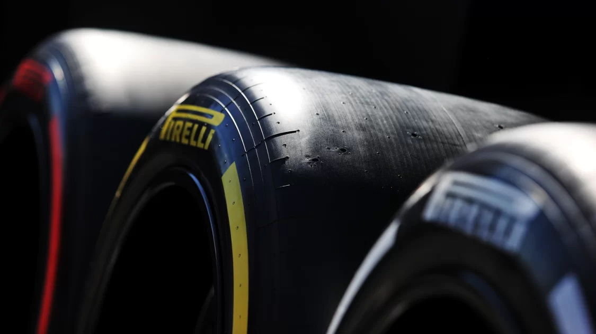

MODIFICACION A LAS REGLAS TEMPORADA 2023
-
Durante este segundo año del nuevo reglamento, han habido nuevos cambios a las reglas y aqui te contamos las novedades de esta temporada del Mundial de Pilotos 2023.
-
NUEVAS ALTURAS
La FIA ya tuvo que retocar en plena temporada 2022, la altura al suelo del fondo plano a causa del 'porpoising' (efecto rebote), que ya deberia estar mitigado para el año 2023. Con la nueva norma de altura quedaría, 15mm mas en el centro y 10mm mas a los lados. Lo cual conlleva para los ingenieros, perder prestaciones al crear un espacio que hará más difícil el sellado del aire que pasa por debajo, perjudicando la eficiencia en el paso por curva.
Ademas, se eleva la altura del difusor e igualmente la FIA, ha ordenado instalar un sensor adicional para monitorear el fenomeno del porpoising. Lo cual podria llevar a sancionar a algún equipo que no haya ajustado sus alturas este año.
-
MAYOR PROTECCION EN CASO DE VUELCO
El accidente de Zhou en Silverstone, ha movido a la FIA a endurecer el halo antivuelo. El nuevo diseño requiere una parte superior redondeada en el halo, lo que reducirá la posibilidad de que se hunda en el suelo durante un accidente, mientras que también asegura una altura mínima para el punto de aplicación de la prueba de homologación.
El test de carga será más estricto, en consecuencia se usara un nuevo material que resista la abrasión. Además, habrá una nueva prueba de homologación física donde la carga empuja el halo antivuelco hacia adelante.
-
RETROVISOR: MAS GRANDE Y LIGERO
Los espejos retrovisores crecen un 30%, 5cm más(aumenta de 150mm a 200mm), mientras que el peso mínimo baja de 798 a 796. No puede pesar menos, por reglamento.
-
LA GASOLINA
Este año se ha limitado el enfriamiento máximo del combustible a 10 grados por debajo de la temperatura ambiente en cada escenario. La FIA igualmente instala un nuevo sensor para medir la presión dentro del depósito (no el polémico flujo), que debe ser de 1 bar. También debe quedar un litro mínimo para verificar la gasolina al acabar la carrera y no sólo en los entrenamientos y la clasificación.
-
DRS, CAJA DE CAMBIOS Y CAMARAS DE CASCO
En algunas carreras se probará dejar el uso del DRS desde la primera vuelta de carrera en las resalidas (ahora prohibido las dos primeras en salidas y resalidas por seguridad) y se probara adelantar su uso 1v en la misma salida.
En las cajas de cambio se podrán hacer cambios hasta ahora prohibidos, al igual que en el motor, por fiabilidad, seguridad o alguna mejora del material sin que suponga mejorar prestaciones. Eso sí, ya no se puede cambiar a mitad de año la relación de las marchas como sí se permitió en 2021 al cambiar el reglamento. Al caerse China del calendario, vuelven a ser 4 las cajas permitidas.
Por último los frenos, en este caso el 'brake by wire' sólo afectará a los frenos traseros.
Igualmente será obligatorio que los pilotos lleven en los cascos la cámara con la vista en los ojos que tanto impacto han causado la pasada temporada. En total serán 7 las que se pueden llevar en cada cambio.
- 
-
SEIS CARRERAS AL SPRINT
Es el principal cambio ya que se duplican los sprints respecto a años anteriores las carreras con doblete los sabados. Azerbaiyán (Bakú), Austria (Red Bull Ring), Bélgica (Spa-Francorchamps), Qatar (Losail), Estados Unidos (Circuito de las Américas) y Sao Paulo (Interlagos) son las sedes escogidas.
Como ya son muchas, la asignación de daños por accidentes en este formato corto, ahora será una cantidad fija por equipo, para cada fin de semana de carrera que incluya una sesión de Sprint. El monto de la asignación se duplicará a 300.000 euros a partir de 2023.
Además de esto, las reglas del parque cerrado en los fines de semana de Sprint se están revisando para 2023, después de que la FIA citara un "aumento significativo en las solicitudes de parque cerrado" entre la sesión de clasificación del viernes y el Sprint del sábado.
-
CAMBIO DE CLASIFICACION
Se llevará a cabo un 'Formato de clasificación revisado' (RQF) en dos carreras de 2023 para ver si se puede mejorar el formato. Aún no se han decidido las carreras, pero el formato sería calificar en Q1 con duros solamente, en Q2 con medios y en Q3 con blandos (todo si no llueve, claro).
En estas dos carreras experimentales sólo habrá 11 juegos de neumáticos disponibles para el fin de semana, por 12 en las seis citas que tengan Sprint y 13 juegos en el resto del campeonato.
-
NUEVO NEUMATICO DURO
Pirelli crea un sexto compuesto, si bien seguirá llevando tres por carrera, el duro, el medio y el blando. El nuevo es un duro menos duro que el C1, con lo que el actual sería como un C0.
-
ACLARAR LAS PENALIZACIONES
Las penalizaciones en la parrilla fueron el centro de atención en el Gran Premio de Italia del año pasado, donde una gran cantidad de pilotos sufrieron sanciones relacionadas con la unidad de potencia y la caja de cambios, juntadas con otras más tradicionales. Se armó un tremendo jaleo en el que nadie sabia en que posición salía. Tras cierta confusión sobre cómo se aplicaron, se ha actualizado la redacción de las normas.
Ahora los pilotos clasificados que hayan acumulado más de 15 penalizaciones acumuladas en la parrilla, o que hayan sido penalizados para comenzar en la parte trasera de la parrilla, comenzarán detrás de cualquier otro piloto clasificado. Su posición relativa se determinará de acuerdo con su clasificación en la qualy.
-

-
MENOS OPCIONES DE SALTARSE EL TOQUE DE QUEDA
A fin de evitar jornadas maratonianas, se sigue incidiendo en el descanso. La cantidad de horas trabajadas por los miembros del equipo de F1 durante los fines de semana de carrera se reducirá en las próximas temporadas, y de momento, el tercero de los tres períodos restringidos (a partir de los viernes) comenzará una hora antes este año.
Para complementar la medida, el número de toques de queda permitidos para el primer (miércoles) y segundo (jueves) también se reducirá a la mitad, de ocho a cuatro y de seis a tres respectivamente. El año que viene volverán a recortarse.